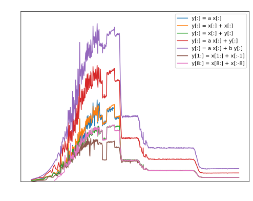

The Vectorization of MOM6
Marshall Ward
2021-04-21
Peak Performance
\[W \le N \times f \times I_\text{vec}\]
| \(W\) | FLOPs per second ("work") |
| \(N\) | # of CPUs |
| \(f\) | Cycles per second |
| \(I_\text{vec}\) | FLOPs per cycle |
CPU Scaling

MOM5 scaling in ACCESS-OM2
Fluid Dynamics Scaling
Tension between local (hyperbolic) solvers
\[\begin{aligned} \frac{\partial \mathbf{u}}{\partial t} &= -\mathbf{u} \cdot \nabla \mathbf{u} - \nabla p + \mathbf{f} \\ \end{aligned}\]
and global (elliptic) solvers
\[\begin{aligned} \nabla^2 p &= -\nabla \cdot \left( \mathbf{u} \cdot \nabla \mathbf{u} \right) + \nabla \cdot \mathbf{F} \\ &\approx \nabla \cdot \mathbf{F} \text{(?)} \\ \end{aligned}\]
... unless you can cheat (aka oceanography)
Clock Speed

Clock Speed vs # of Cores
Using more cores further reduces clock speed!
Vectorization
Intel normalization

Vector Instructions

| Instr. | Size | GFLOP/s | Obs. (Gaea) |
|---|---|---|---|
| SSE | 4 SP/2 DP | 14.4 | 14.394 |
| AVX | 8 SP/4 DP | 28.8 | 28.790 |
Fused-Multiply Add
FMA: \(d \leftarrow a \times b + c\)
| Instr. | Op | GFLOP/s | Obs. |
|---|---|---|---|
SSE |
Add FMA |
14.4 28.8 |
14.394 28.790 |
AVX |
Add FMA |
28.8 57.6 |
28.788 57.580 |
\(\text{rd}(\text{rd}(a \times b) + c)\) vs \(\text{rd}(a \times b + c)\)
Concurrency

2 instr. per cycle, even FMA
Peak
| Instr. | Op | GFLOP/s | Obs. |
|---|---|---|---|
SSE |
Add FMA 2x FMA |
14.4 28.8 57.6 |
14.394 28.790 57.580 |
AVX |
Add Add+Mul FMA 2x FMA |
28.8 57.6 57.6 115.2 |
28.788 57.580 57.580 115.160 |
Array Ops

Arithmetic Intensity
| Expression | AI | GFLOP/s |
|---|---|---|
| y[:] = a x[:] | 1/4 | 26.43 |
| y[:] = x[:] + x[:] | 1/4 | 24.98 |
| y[:] = x[:] + y[:] | 1/8 | 18.34 |
| y[:] = a x[:] + y[:] | 1/4 | 37.58 |
| y[:] = a x[:] + b y[:] | 3/8 | 51.08 |
| y[:] = x[1:] - x[:-1] | 1/8 | 14.07 |
| y[:] = x[8:] - x[:-8] | 1/8 | 18.39 |
MOM6 sample config
Describe the "benchmark"
Profiling with perf
Profiling with perf
MOM6 FLOP rates
| Subroutine | %time | GFLOP/s |
|---|---|---|
| btstep | 12.94 | 0.89 |
| horizontal_viscosity | 6.98 | 2.30 |
| vertvisc_coef | 6.36 | 1.29 |
| coradcalc | 4.58 | 2.68 |
| int_density_dz_wright | 4.14 | 8.60 |
| zonal_flux_adjust | 3.59 | 3.44 |
| set_merid_bt_cont | 3.41 | 3.17 |
| find_coupling_coef | 3.40 | 2.50 |
With modules...
| Module | Subroutine | %time | GFLOP/s |
|---|---|---|---|
| MOM_barotropic | btstep | 12.94 | 0.89 |
| MOM_hor_visc | horizontal_viscosity | 6.98 | 2.30 |
| MOM_vert_friction | vertvisc_coef | 6.36 | 1.29 |
| MOM_Coriolisadv | coradcalc | 4.58 | 2.68 |
| MOM_EOS_Wright | int_density_dz_wright | 4.14 | 8.60 |
| MOM_continuity_ppm | zonal_flux_adjust | 3.59 | 3.44 |
| MOM_continuity_ppm | set_merid_bt_cont | 3.41 | 3.17 |
| MOM_vert_friction | find_coupling_coef | 3.40 | 2.50 |
The rest
| Module | Subroutine | %time | GFLOP/s |
|---|---|---|---|
| MOM_continuity_ppm | zonal_flux_layer |
|
|
| MOM_continuity_ppm | meridional_flux_adjust |
|
|
| MOM_continuity_ppm | zonal_mass_flux |
|
|
| MOM_dynamics_split_rk2 | step_MOM_dyn_split_rk2 |
|
|
| MOM_vert_friction | vertvisc_remnant |
|
|
| MOM_continuity_ppm | ppm_limit_pos |
|
|
| MOM_continuity_ppm | meridional_mass_flux |
|
|
| mpp_domains_mod | mpp_do_group_update_r8 |
|
|
| MOM_vert_friction | vertvisc |
|
|
| MOM_thickness_diffuse | thickness_diffuse_full |
|
|
| <runtime> | memset_avx2_unaligned_erms |
|
|
| MOM_barotropic | btcalc |
|
|
Horizontal Viscosity
do j=Jsq,Jeq+1 ; do i=Isq,Ieq+1
if ((CS%Smagorinsky_Kh) .or. (CS%Smagorinsky_Ah)) then
Shear_mag = sqrt(sh_xx(i,j)*sh_xx(i,j) + &
0.25*((sh_xy(I-1,J-1)*sh_xy(I-1,J-1) + sh_xy(I,J)*sh_xy(I,J)) + &
(sh_xy(I-1,J)*sh_xy(I-1,J) + sh_xy(I,J-1)*sh_xy(I,J-1))))
endif
if ((CS%Leith_Kh) .or. (CS%Leith_Ah)) then
if (CS%use_QG_Leith_visc) then
vert_vort_mag = MIN(grad_vort_mag_h(i,j) + grad_div_mag_h(i,j),3.*grad_vort_mag_h_2d(i,j))
else
vert_vort_mag = (grad_vort_mag_h(i,j) + grad_div_mag_h(i,j))
endif
endif
if (CS%better_bound_Ah .or. CS%better_bound_Kh) then
hrat_min = min(1.0, min(h_u(I,j), h_u(I-1,j), h_v(i,J), h_v(i,J-1)) / &
(h(i,j,k) + h_neglect) )
visc_bound_rem = 1.0
endif
if (CS%Laplacian) then
! Determine the Laplacian viscosity at h points, using the
! largest value from several parameterizations.
Kh = CS%Kh_bg_xx(i,j) ! Static (pre-computed) background viscosity
if (CS%add_LES_viscosity) then
if (CS%Smagorinsky_Kh) Kh = Kh + CS%Laplac2_const_xx(i,j) * Shear_mag
if (CS%Leith_Kh) Kh = Kh + CS%Laplac3_const_xx(i,j) * vert_vort_mag*inv_PI3
else
if (CS%Smagorinsky_Kh) Kh = max( Kh, CS%Laplac2_const_xx(i,j) * Shear_mag )
if (CS%Leith_Kh) Kh = max( Kh, CS%Laplac3_const_xx(i,j) * vert_vort_mag*inv_PI3)
endif
! All viscosity contributions above are subject to resolution scaling
if (rescale_Kh) Kh = VarMix%Res_fn_h(i,j) * Kh
if (CS%res_scale_MEKE) meke_res_fn = VarMix%Res_fn_h(i,j)
! Older method of bounding for stability
if (legacy_bound) Kh = min(Kh, CS%Kh_Max_xx(i,j))
Kh = max( Kh, CS%Kh_bg_min ) ! Place a floor on the viscosity, if desired.
if (use_MEKE_Ku) &
Kh = Kh + MEKE%Ku(i,j) * meke_res_fn ! *Add* the MEKE contribution (might be negative)
if (CS%anisotropic) Kh = Kh + CS%Kh_aniso * ( 1. - CS%n1n2_h(i,j)**2 ) ! *Add* the tension component
! of anisotropic viscosity
! Newer method of bounding for stability
if (CS%better_bound_Kh) then
if (Kh >= hrat_min*CS%Kh_Max_xx(i,j)) then
visc_bound_rem = 0.0
Kh = hrat_min*CS%Kh_Max_xx(i,j)
else
visc_bound_rem = 1.0 - Kh / (hrat_min*CS%Kh_Max_xx(i,j))
endif
endif
if ((CS%id_Kh_h>0) .or. find_FrictWork .or. CS%debug) Kh_h(i,j,k) = Kh
if (CS%id_grid_Re_Kh>0) then
KE = 0.125*((u(I,j,k)+u(I-1,j,k))**2 + (v(i,J,k)+v(i,J-1,k))**2)
grid_Re_Kh(i,j,k) = (sqrt(KE) * sqrt(CS%grid_sp_h2(i,j))) &
/ max(Kh, CS%min_grid_Kh)
endif
if (CS%id_div_xx_h>0) div_xx_h(i,j,k) = div_xx(i,j)
if (CS%id_sh_xx_h>0) sh_xx_h(i,j,k) = sh_xx(i,j)
str_xx(i,j) = -Kh * sh_xx(i,j)
else ! not Laplacian
str_xx(i,j) = 0.0
endif ! Laplacian
if (CS%anisotropic) then
! Shearing-strain averaged to h-points
local_strain = 0.25 * ( (sh_xy(I,J) + sh_xy(I-1,J-1)) + (sh_xy(I-1,J) + sh_xy(I,J-1)) )
! *Add* the shear-strain contribution to the xx-component of stress
str_xx(i,j) = str_xx(i,j) - CS%Kh_aniso * CS%n1n2_h(i,j) * CS%n1n1_m_n2n2_h(i,j) * local_strain
endif
if (CS%biharmonic) then
! Determine the biharmonic viscosity at h points, using the
! largest value from several parameterizations.
AhSm = 0.0; AhLth = 0.0
if ((CS%Smagorinsky_Ah) .or. (CS%Leith_Ah)) then
if (CS%Smagorinsky_Ah) then
if (CS%bound_Coriolis) then
AhSm = Shear_mag * (CS%Biharm_const_xx(i,j) + &
CS%Biharm_const2_xx(i,j)*Shear_mag)
else
AhSm = CS%Biharm_const_xx(i,j) * Shear_mag
endif
endif
if (CS%Leith_Ah) AhLth = CS%Biharm6_const_xx(i,j) * abs(Del2vort_h(i,j)) * inv_PI6
Ah = MAX(MAX(CS%Ah_bg_xx(i,j), AhSm), AhLth)
if (CS%bound_Ah .and. .not.CS%better_bound_Ah) &
Ah = MIN(Ah, CS%Ah_Max_xx(i,j))
else
Ah = CS%Ah_bg_xx(i,j)
endif ! Smagorinsky_Ah or Leith_Ah
if (use_MEKE_Au) Ah = Ah + MEKE%Au(i,j) ! *Add* the MEKE contribution
if (CS%Re_Ah > 0.0) then
KE = 0.125*((u(I,j,k)+u(I-1,j,k))**2 + (v(i,J,k)+v(i,J-1,k))**2)
Ah = sqrt(KE) * CS%Re_Ah_const_xx(i,j)
endif
if (CS%better_bound_Ah) then
Ah = MIN(Ah, visc_bound_rem*hrat_min*CS%Ah_Max_xx(i,j))
endif
if ((CS%id_Ah_h>0) .or. find_FrictWork .or. CS%debug) Ah_h(i,j,k) = Ah
if (CS%id_grid_Re_Ah>0) then
KE = 0.125*((u(I,j,k)+u(I-1,j,k))**2 + (v(i,J,k)+v(i,J-1,k))**2)
grid_Re_Ah(i,j,k) = (sqrt(KE) * CS%grid_sp_h3(i,j)) &
/ max(Ah, CS%min_grid_Ah)
endif
str_xx(i,j) = str_xx(i,j) + Ah * &
(CS%DY_dxT(i,j) * (G%IdyCu(I,j)*Del2u(I,j) - G%IdyCu(I-1,j)*Del2u(I-1,j)) - &
CS%DX_dyT(i,j) * (G%IdxCv(i,J)*Del2v(i,J) - G%IdxCv(i,J-1)*Del2v(i,J-1)))
! Keep a copy of the biharmonic contribution for backscatter parameterization
bhstr_xx(i,j) = Ah * &
(CS%DY_dxT(i,j) * (G%IdyCu(I,j)*Del2u(I,j) - G%IdyCu(I-1,j)*Del2u(I-1,j)) - &
CS%DX_dyT(i,j) * (G%IdxCv(i,J)*Del2v(i,J) - G%IdxCv(i,J-1)*Del2v(i,J-1)))
bhstr_xx(i,j) = bhstr_xx(i,j) * (h(i,j,k) * CS%reduction_xx(i,j))
endif ! biharmonic
enddo ; enddo
Non-vectorized code
│ │833 Shear_mag = sqrt(sh_xx(i,j)*sh_xx(i,j) + &
│ 0.70 │ vaddsd %xmm13,%xmm12,%xmm14
│ 1.62 │ vsqrtsd %xmm14,%xmm14,%xmm14
│ 6.53 │ vmovsd %xmm14,-0x8e8(%rbp)vaddsd |
Serial add |
vaddpd |
Parallel add |
Excessive Stack
│ │919 Ah = MAX(MAX(CS%Ah_bg_xx(i,j), AhSm), AhLth)
│ │ lea (%rax,%rdx,8),%rdi
│ │ lea (%rdi,%rsi,1),%r8
│ 0.39 │ vmovsd (%r8,%r9,8),%xmm0
│ 0.01 │ vmaxsd -0x13f8(%rbp),%xmm0,%xmm0
│ 2.34 │ vmaxsd -0x13f0(%rbp),%xmm0,%xmm0
│ 0.42 │ vmovsd %xmm0,-0x1468(%rbp)| lea | Compute mem address |
| vmovsd | Serial move |
| vmaxsd | Serial max |
Example 2: CoradCalc
- Gather disparate memory accesses
Example 3: Vertical Viscosity
- if(do_I(:))
Example 3: btstep
- ijk -> kij vectorization
- "override_limits"
Mystery Problems
- MOM_hor_visc and the stack
Hierarchy of Performance
Enable vectorization
Eliminate RAM-bound operations (~2GFLOP/s)
- i.e. reduce memory accesses
Think about algorithm
- Reduce arithmetic intensity